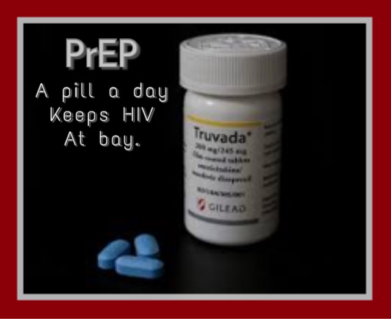

So-called pre-exposure prophylaxis (PrEP) with Truvada, a daily pill combining the medicines tenofovir and emtricitabine, can lower the risk of getting HIV from sex by up to 90 percent, according to the U.S. Centers for Disease Control and Prevention. Truvada has long been used to treat HIV and as a prevention strategy
Pre-Exposure Prophylaxis (PrEP) is a pill that helps people who don’t have HIV and are at risk of getting infected with it, a chance to prevent the infection by taking a daily pill(Truvada).When taken consistently, PrEP has been shown to reduce the risk of HIV infection in people who are at high risk by up to 92%. PrEP is much less effective if it is not taken consistently. PrEP can also be combined with other prevention methods to provide even greater protection than if used by itself. People who use this pill must commit to using it every day and seeing your health care provider every 3 months for a check up.
